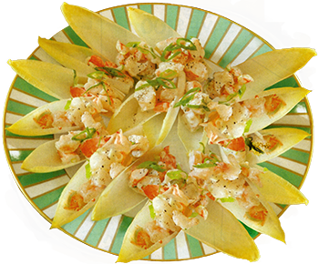

Ingredients
- 1 thinly sliced Scallion
- 2 tbsp. Mayonnaise
- 1 tsp fresh Lemon Juice
- 1 tsp toasted Sesame Oil
- 1/2 lb. cooked Shrimp, coarsely chopped
- 24 Endive Leaves (from about 2 heads)

Instructions
- In medium bowl, mix scallion, mayo, lemon juice and sesame oil.
- Fold in shrimp; season.
- Spoon onto endive leaves.